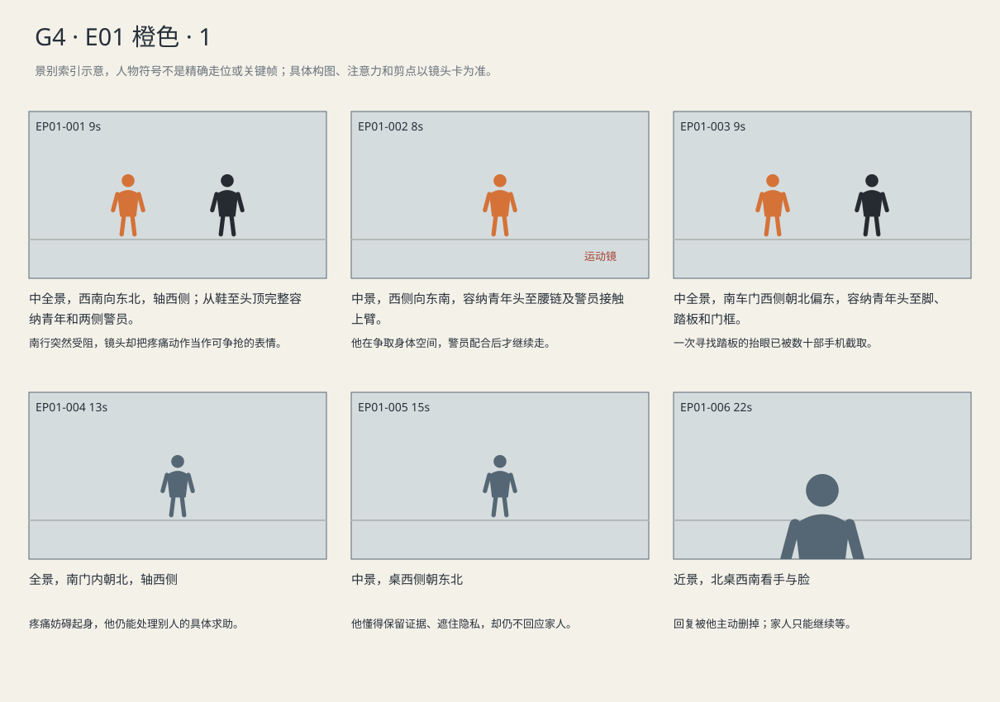
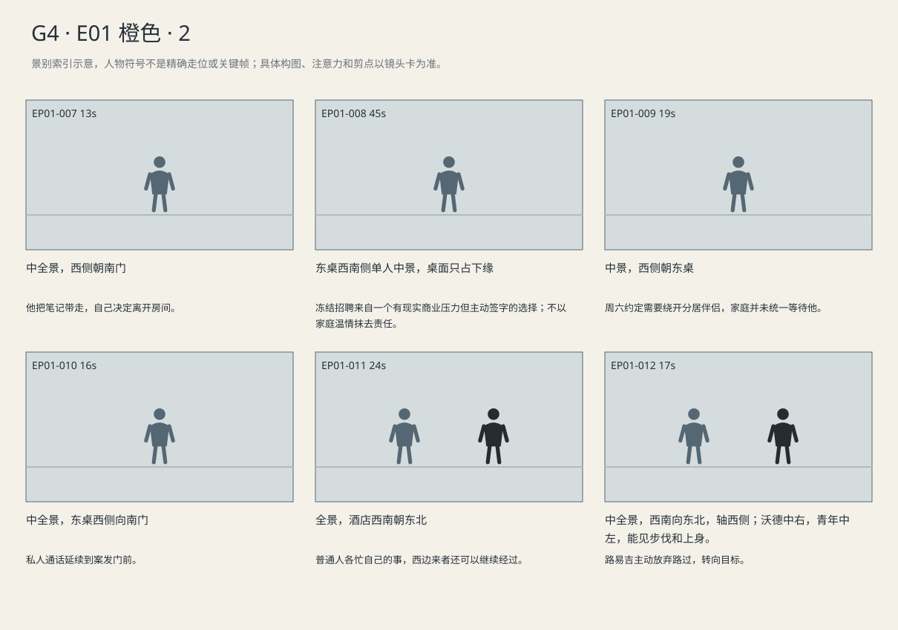
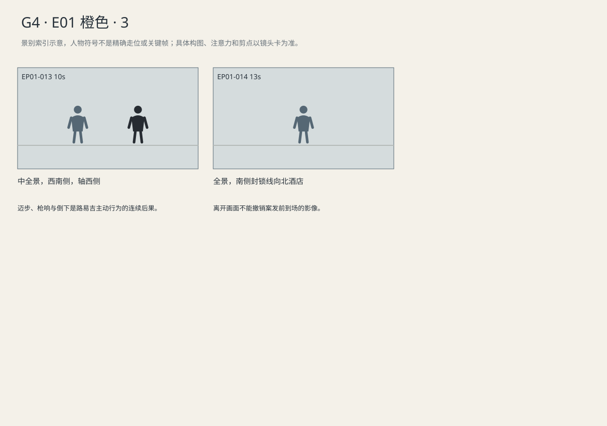

两个早晨里的工作与家庭选择，最终被青年主动转向并开枪的行为截断。
剧本Markdown · 全部独立复制稿 · 英语字幕 · 中文字幕
详细剧本
E01-SC01 · 日·押送当天 · DOCK
纽约冬日河岸，北面的直升机仍在转，南边押送车侧门开着。媒体被西栏杆挡住，东侧留给警员；橙衣路易吉由北向南夹在两名警员之间，身前手铐连着腰链。
南边警员抬掌拦住横穿通道的人，队列忽然收短。路易吉的右脚已落下，上身被步幅扯住，腕链撞在橙色布料上。西边立刻有人举高手机。
现场记者（英语）：Luigi! Here! Look up!
中文对照：路易吉！这里！抬头！
他没有看喊声，把下一步缩小。
警员甲握一下他的上臂，给他停住的空间。
警员甲（英语）：Need a second?
中文对照：要停一下吗？
路易吉呼气，肩膀落下，没有向喊声转头。
路易吉（英语）：Just room.
中文对照：给我点空就行。
甲松到只扶不拽，青年重新迈步。
踏板近了，路易吉收起双手，目光落在脚下。前面的警员让到一旁，他抬眼看清车门，西侧快门顿时密起来。
路易吉（英语）：Watch the chain.
中文对照：留意一下链子。
他把右脚移到踏板前，尚未抬起。深色大衣的市政官员在西后方挤入取景范围。
E02-SC01 · 清晨·案发当天·枪响前 · HOTEL-ROOM
临时旅馆房间，南门关着，东边窄床被坐出凹陷，西窗透冷光，北桌上放着笔记本、手机和黑背包。深炭灰夹克的路易吉坐在床边，手扶腰后，先等一阵疼痛过去。
路易吉想从东床边站起，腰背绷住，改用左手撑床沿。北桌手机自动播出互助帖语音。
互助帖患者录音（英语）：They want the form again. I already sent it. I've got the receipt.
中文对照：又要那张表。我早发过了，回执都在。
录音结束，他仍站着，等手能松开才去拿手机。
他按住录音键，从笔记里翻出自己列的项目。
路易吉（英语）：Keep that receipt. Ask the clinic for a list of the attachments. And cover your address before you post.
中文对照：回执留好。问诊所要一份附件清单。还有，发出去前把地址遮住。
松开键后回听开头，只把这条语音发回互助帖。手机再次震动，家人的姓名盖住发送成功。
他点开家人的对话，录下开头。
路易吉（英语）：I know you've been calling. I'm—
中文对照：我知道你一直在打电话。我——
走廊有推车轮声，他看向南门，拇指一直压着。录音多出一段房间空声。他听见自己的开头，按下删除。重新按住录音键，这次把话说完整。
路易吉（英语）：I'm all right. I'll call you when I can.
中文对照：我没事。能打电话的时候就打。
回听时他看着发送键，仍删除，最后把手机扣到桌上。
敲门响了两下。
旅馆清洁员画外声（英语）：Housekeeping. Towels?
中文对照：客房清洁。要毛巾吗？
他看一眼门，把笔记合上放进黑包。
路易吉（英语）：No, thanks.
中文对照：不用了，谢谢。
推车继续走。他把手机放进包内，拉好拉链；等轮声远开，背起包，转动门把。
E02-SC02 · 清晨·同日 · HOTEL-BREAKFAST
酒店早餐小厅，入口在南，西窗照着东侧双人桌，北墙靠着取餐台。沃德独坐东桌，灰蓝西装扣子敞着，右手手机、左手咖啡杯，会议资料压在盘子下面。
服务员要收盘，沃德用左掌挡住，把杯子压到人力表翘起的角上。
运营主管电话声（英语）：We can still make the number if we freeze hiring. Reviews will take longer, though. I need you to sign off.
中文对照：冻结招聘，季度指标还能达成。不过复核会拖更久。这得你签字。
他左手从纸边拿笔，笔尖停在冻结栏外，没有落下。
沃德（英语）：And if we don't freeze it?
中文对照：不冻结呢？
电话那头翻页，他把咖啡挪开，杯底湿印留在空缺岗位旁。
运营主管电话声（英语）：We miss the quarter. Those are the choices I've got.
中文对照：这个季度就达不了标。我手上就这两条路。
沃德（英语）：Then freeze hiring till the end of the quarter.
中文对照：那就冻结到这个季度结束。
沃德在延期框签名，把笔放下，却没立刻挂电话。
沃德（英语）：Monday, send me the wait times. In days.
中文对照：周一把等待时长给我。按天算。
他把签字页压回公文袋上，儿子来电亮起。业务电话还在说，他先结束这一通。
他接儿子电话，用纸巾擦掉指尖咖啡。
沃德（英语）：Saturday's fine. What time did your mom say?
中文对照：周六可以。你妈说几点？
他在干净餐巾上写时间。电话那端孩子似乎把手机递给另一人，他立刻压低声音。
沃德（英语）：No, don't put her on. Text me.
中文对照：不用，别让她接。发消息给我。
没人给他解围，他只好听完，自己把餐巾上写错的时间划掉重写。
服务员终于端走盘子，沃德把薄公文袋夹到左腋。
沃德（英语）：Tell me about the plane. I'm heading out.
中文对照：跟我说说飞机模型。我正往外走。
他走到南门，回头发现笔留着，返一步用左手拿走插进袋边笔环。那张改过时间的餐巾也被他折好收进左袋。电话一直没挂。
E02-SC03 · 清晨·枪响时 · HOTEL
酒店外北边旋转门缓缓转动，东侧是上客位，南边车道有车停靠，西边人行道通向街角。沃德从北门出来，路易吉还未走入门前区域；行李员站在门口东侧。
沃德从北旋转门出来，电话仍贴右耳，薄公文袋夹左腋。东上客位车辆往前挪，行李员拉住准备跟车走的箱子。
行李员（英语）：Not that one. Just wait by the door, please.
中文对照：不是那辆。先在门边等，好吗？
沃德让过拖箱旅客，摸出会议卡，听见儿子重问时间。
沃德（英语）：Saturday. I said Saturday. What happened to the wing?
中文对照：周六，我说了周六。翅膀又怎么了？
他把会议卡放回左袋，西侧人行道出现深炭灰夹克。
沃德空出的左手比划松掉的翅膀，终于能插话。
沃德（英语）：Leave it on my desk. Not the kitchen table. We can fix it Saturday.
中文对照：放我书桌上，别放厨房桌。周六我们一起修。
路易吉由西向东走，认出沃德后停住。车流有一个空隙，他没有继续朝东，把肩膀转向沃德。沃德放低手机，仍在听儿子。
路易吉朝沃德迈一步，手臂在身前抬起，操作细节不显露。两声枪响，沃德跌出下方，手机掉地，门边杯子滚向路缘。行李员蹲到柱后。路易吉看见沃德倒下，停一瞬，转身从西侧离开。
稍后南路缘拉起封锁线，纸杯仍停路边。警员甲问行李员，指酒店门口摄像机。
警员甲（英语）：Get the footage from before the shots, too. I want to see him coming in.
中文对照：枪响以前的监控也拿来。我得看他怎么来的。
行李员指西边来路，手还在抖。乙带值班人员进北门，甲看一眼杯子，又抬头看摄像机。
景别索引板
简化人物符号仅用于检索景别。完整镜头卡、信息变化及相邻剪点另页阅读。



逐镜复制稿
EP01-001 · 制作号E01-SH001 · 9s · 中全景，西南向东北，轴西侧；从鞋至头顶完整容纳青年和两侧警员。
南行突然受阻，镜头却把疼痛动作当作可争抢的表情。
成片采用 [0,9) 秒；1个生成候选，技术边界不是剪点。候选未生成。
16:9横屏，当代美国真人现实悬疑。环境低至中等饱和，人物肤色保持真实差异与自然纹理；深黑保留衣料和道具分离，白纸与白领高光柔和有层次。冷暖来自本镜已有物理光源，不统一青橙、不磨皮、不以整体欠曝制造悬疑。遵循本镜机位、表演与焦点，不擅自追加缓推、急变焦或摇晃。
场次风格：本场时段：日·押送当天。本场光源启用及强度以明确时段和正文为准，同场反打继承光源方向；不因景别变化任意换色温。 本地光色与材质：河岸冷灰、湿石与深蓝制服构成环境；橙囚服保持哑光折痕，面部可读。南侧车灯只影响确被照到的部位。媒体栏杆形成空间压力，不给人物添加英雄逆光。E01/E06同次押送继承天气、光比和衣色。橙棉布亮部保织纹，不与肤色融合。
总生成长度11秒，为中间9秒采用区间保留开头和结尾各1秒自然余量，不增添剧情。
人物：
路易吉，26岁意裔男性，深棕短卷发、浓眉、棕眼、较长椭圆脸、清楚下颌、精瘦体态；橙色连体囚服、灰运动鞋、双腕在身前铐住并连腰链，背包不在身上；前铐不得移至背后。声音中低、清楚克制。
两名成年警员，深蓝制服、防护背心；一名主问，一名核对身份。不让配角无因齐转头。
现场男记者，35岁，黑短发、深灰防风衣、举收音麦；中高音穿过风声呼问，在西栏杆外，是否画内按本镜构图。
环境与光源：纽约冬日河岸；河/直升机区在北，押送车位在南；人物沿北向南通道，媒体在西侧栏杆外，东侧为警员缓冲区。机位留在西侧或南侧可达区；冷天光来自北侧天空，车灯位于南。01/06同次行动方向不反转。
景别/机位：中全景，西南向东北，轴西侧；从鞋至头顶完整容纳青年和两侧警员。
构图：前景西栏杆和举起的手机边缘；中景橙衣青年夹在两警员间；北直升机在后景，南行通道向画面右下延伸。
起始画面：北向南队列已走到通道中段，右脚落地，身前铐连腰链，无背包。
事件与表演：南边警员抬掌拦住横穿通道的人，队列忽然收短。路易吉的右脚已落下，上身被步幅扯住，腕链撞在橙色布料上。西边立刻有人举高手机。现场记者对路易吉说本镜第1句英语对白，从西侧抢着喊，喊声穿过旋翼。他没有看喊声，把下一步缩小。
注意力变化：只见橙色身体处在警员与栏杆之间。 → 南行突然受阻，镜头却把疼痛动作当作可争抢的表情。
摄影机：固定在西南栏杆内许可区；不追人脸，让队列急停和手机举起在同一画面内发生。
焦点：保持三人及脚步同一可读范围，不切焦追闪光。
结束状态：青年第二步缩短，两警员仍在两侧，前方道路开始腾出。
声音：<北侧旋翼、西侧快门与记者声>
(无背景音乐)
准确对白按顺序：
现场记者向路易吉，从西侧抢着喊，喊声穿过旋翼，只使用英语说一次：{Luigi! Here! Look up!}
只说列出的英语原句；导演说明不发声，不说中文译文，不额外加旁白或对白。手机/公文/字幕均由后期叠加，生成画面不排字。单镜连续，不加入内部切镜；前后保持身份、服装、门窗、物件与接触状态一致。静帧起态备稿
16:9横屏，当代美国真人现实悬疑。环境低至中等饱和，人物肤色保持真实差异与自然纹理；深黑保留衣料和道具分离，白纸与白领高光柔和有层次。冷暖来自本镜已有物理光源，不统一青橙、不磨皮、不以整体欠曝制造悬疑。遵循本镜机位、表演与焦点，不擅自追加缓推、急变焦或摇晃。
场次风格：本场时段：日·押送当天。本场光源启用及强度以明确时段和正文为准，同场反打继承光源方向；不因景别变化任意换色温。 本地光色与材质：河岸冷灰、湿石与深蓝制服构成环境；橙囚服保持哑光折痕，面部可读。南侧车灯只影响确被照到的部位。媒体栏杆形成空间压力，不给人物添加英雄逆光。E01/E06同次押送继承天气、光比和衣色。橙棉布亮部保织纹，不与肤色融合。
路易吉，26岁意裔男性，深棕短卷发、浓眉、棕眼、较长椭圆脸、清楚下颌、精瘦体态；橙色连体囚服、灰运动鞋、双腕在身前铐住并连腰链，背包不在身上；前铐不得移至背后。声音中低、清楚克制。
两名成年警员，深蓝制服、防护背心；一名主问，一名核对身份。不让配角无因齐转头。
现场男记者，35岁，黑短发、深灰防风衣、举收音麦；中高音穿过风声呼问，在西栏杆外，是否画内按本镜构图。
纽约冬日河岸；河/直升机区在北，押送车位在南；人物沿北向南通道，媒体在西侧栏杆外，东侧为警员缓冲区。机位留在西侧或南侧可达区；冷天光来自北侧天空，车灯位于南。01/06同次行动方向不反转。
中全景，西南向东北，轴西侧；从鞋至头顶完整容纳青年和两侧警员。；起态构图：北向南队列已走到通道中段，右脚落地，身前铐连腰链，无背包。。空间方位按上列环境，人物只处于起态；本镜后续调度不出现在静帧。此图不描画尚未发生的动作，不生成字幕和公文长字。
| 英语原句 | 中文对照 | 预定窗口 |
|---|
| 现场记者：Luigi! Here! Look up! | 路易吉！这里！抬头！ | 0.6–2.85s |
观众信息：只见橙色身体处在警员与栏杆之间。 → 南行突然受阻，镜头却把疼痛动作当作可争抢的表情。
切点：缩短的第二步尚未落地，切近看警员怎样接住这次停顿。
接口：同场保持轴西侧，接上臂扶持和青年要空间，不先拍不到的腰链特写。
EP01-002 · 制作号E01-SH002 · 8s · 中景，西侧向东南，容纳青年头至腰链及警员接触上臂。
他在争取身体空间，警员配合后才继续走。
成片采用 [9,17) 秒；1个生成候选，技术边界不是剪点。候选未生成。
16:9横屏，当代美国真人现实悬疑。环境低至中等饱和，人物肤色保持真实差异与自然纹理；深黑保留衣料和道具分离，白纸与白领高光柔和有层次。冷暖来自本镜已有物理光源，不统一青橙、不磨皮、不以整体欠曝制造悬疑。遵循本镜机位、表演与焦点，不擅自追加缓推、急变焦或摇晃。
场次风格：本场时段：日·押送当天。本场光源启用及强度以明确时段和正文为准，同场反打继承光源方向；不因景别变化任意换色温。 本地光色与材质：河岸冷灰、湿石与深蓝制服构成环境；橙囚服保持哑光折痕，面部可读。南侧车灯只影响确被照到的部位。媒体栏杆形成空间压力，不给人物添加英雄逆光。E01/E06同次押送继承天气、光比和衣色。橙棉布亮部保织纹，不与肤色融合。
总生成长度10秒，为中间8秒采用区间保留开头和结尾各1秒自然余量，不增添剧情。
人物：
路易吉，26岁意裔男性，深棕短卷发、浓眉、棕眼、较长椭圆脸、清楚下颌、精瘦体态；橙色连体囚服、灰运动鞋、双腕在身前铐住并连腰链，背包不在身上；前铐不得移至背后。声音中低、清楚克制。
两名成年警员，深蓝制服、防护背心；一名主问，一名核对身份。不让配角无因齐转头。
环境与光源：纽约冬日河岸；河/直升机区在北，押送车位在南；人物沿北向南通道，媒体在西侧栏杆外，东侧为警员缓冲区。机位留在西侧或南侧可达区；冷天光来自北侧天空，车灯位于南。01/06同次行动方向不反转。
景别/机位：中景，西侧向东南，容纳青年头至腰链及警员接触上臂。
构图：青年居中，警员肩臂在两边
起始画面：右脚已落、第二步缩短，身体暂被前方停步扯住；双腕身前、甲在上臂旁。
事件与表演：警员甲握一下他的上臂，给他停住的空间。警员甲对路易吉说本镜第1句英语对白，贴近问，手先托住上臂。路易吉呼气，肩膀落下，没有向喊声转头。路易吉对警员甲说本镜第2句英语对白，压低声音，等呼气后才答。甲松到只扶不拽，青年重新迈步。
注意力变化：他突然停了半步，原因还可能被误读。 → 他在争取身体空间，警员配合后才继续走。
摄影机：西侧与队列同速向南平移约一步；停步触发停机，恢复步伐再随行，不超过人。
焦点：保持脸、上臂接触和身前手铐都在中近景可读范围，不做手到脸的大幅切焦。
结束状态：青年继续南行，甲轻扶上臂，双腕在身前连腰链。
声音：<链子短响、鞋底摩擦、持续旋翼>
(无背景音乐)
准确对白按顺序：
警员甲向路易吉，贴近问，手先托住上臂，只使用英语说一次：{Need a second?}
路易吉向警员甲，压低声音，等呼气后才答，只使用英语说一次：{Just room.}
只说列出的英语原句；导演说明不发声，不说中文译文，不额外加旁白或对白。手机/公文/字幕均由后期叠加，生成画面不排字。单镜连续，不加入内部切镜；前后保持身份、服装、门窗、物件与接触状态一致。静帧起态备稿
16:9横屏，当代美国真人现实悬疑。环境低至中等饱和，人物肤色保持真实差异与自然纹理；深黑保留衣料和道具分离，白纸与白领高光柔和有层次。冷暖来自本镜已有物理光源，不统一青橙、不磨皮、不以整体欠曝制造悬疑。遵循本镜机位、表演与焦点，不擅自追加缓推、急变焦或摇晃。
场次风格：本场时段：日·押送当天。本场光源启用及强度以明确时段和正文为准，同场反打继承光源方向；不因景别变化任意换色温。 本地光色与材质：河岸冷灰、湿石与深蓝制服构成环境；橙囚服保持哑光折痕，面部可读。南侧车灯只影响确被照到的部位。媒体栏杆形成空间压力，不给人物添加英雄逆光。E01/E06同次押送继承天气、光比和衣色。橙棉布亮部保织纹，不与肤色融合。
路易吉，26岁意裔男性，深棕短卷发、浓眉、棕眼、较长椭圆脸、清楚下颌、精瘦体态；橙色连体囚服、灰运动鞋、双腕在身前铐住并连腰链，背包不在身上；前铐不得移至背后。声音中低、清楚克制。
两名成年警员，深蓝制服、防护背心；一名主问，一名核对身份。不让配角无因齐转头。
纽约冬日河岸；河/直升机区在北，押送车位在南；人物沿北向南通道，媒体在西侧栏杆外，东侧为警员缓冲区。机位留在西侧或南侧可达区；冷天光来自北侧天空，车灯位于南。01/06同次行动方向不反转。
中景，西侧向东南，容纳青年头至腰链及警员接触上臂。；起态构图：右脚已落、第二步缩短，身体暂被前方停步扯住；双腕身前、甲在上臂旁。。空间方位按上列环境，人物只处于起态；本镜后续调度不出现在静帧。此图不描画尚未发生的动作，不生成字幕和公文长字。
| 英语原句 | 中文对照 | 预定窗口 |
|---|
| 警员甲：Need a second? | 要停一下吗？ | 0.6–2.38s |
| 路易吉：Just room. | 给我点空就行。 | 2.73–4.13s |
观众信息：他突然停了半步，原因还可能被误读。 → 他在争取身体空间，警员配合后才继续走。
切点：甲的握力放松，青年的肩线随下一步恢复向南。
接口：切南端斜看，轴线不变
EP01-003 · 制作号E01-SH003 · 9s · 中全景，南车门西侧朝北偏东，容纳青年头至脚、踏板和门框。
一次寻找踏板的抬眼已被数十部手机截取。
成片采用 [17,26) 秒；1个生成候选，技术边界不是剪点。候选未生成。
16:9横屏，当代美国真人现实悬疑。环境低至中等饱和，人物肤色保持真实差异与自然纹理；深黑保留衣料和道具分离，白纸与白领高光柔和有层次。冷暖来自本镜已有物理光源，不统一青橙、不磨皮、不以整体欠曝制造悬疑。遵循本镜机位、表演与焦点，不擅自追加缓推、急变焦或摇晃。
场次风格：本场时段：日·押送当天。本场光源启用及强度以明确时段和正文为准，同场反打继承光源方向；不因景别变化任意换色温。 本地光色与材质：河岸冷灰、湿石与深蓝制服构成环境；橙囚服保持哑光折痕，面部可读。南侧车灯只影响确被照到的部位。媒体栏杆形成空间压力，不给人物添加英雄逆光。E01/E06同次押送继承天气、光比和衣色。橙棉布亮部保织纹，不与肤色融合。
总生成长度11秒，为中间9秒采用区间保留开头和结尾各1秒自然余量，不增添剧情。
人物：
路易吉，26岁意裔男性，深棕短卷发、浓眉、棕眼、较长椭圆脸、清楚下颌、精瘦体态；橙色连体囚服、灰运动鞋、双腕在身前铐住并连腰链，背包不在身上；前铐不得移至背后。声音中低、清楚克制。
两名成年警员，深蓝制服、防护背心；一名主问，一名核对身份。不让配角无因齐转头。
市政官员，60岁白人男性，灰短发、深色长大衣，无可辨对白，在西后方背景；不抢主角动作。
环境与光源：纽约冬日河岸；河/直升机区在北，押送车位在南；人物沿北向南通道，媒体在西侧栏杆外，东侧为警员缓冲区。机位留在西侧或南侧可达区；冷天光来自北侧天空，车灯位于南。01/06同次行动方向不反转。
景别/机位：中全景，南车门西侧朝北偏东，容纳青年头至脚、踏板和门框。
构图：南车门框在右前景，青年两步外中景，西媒体与官员后景。
起始画面：距南车门两步，前铐低垂
事件与表演：踏板近了，路易吉收起双手，目光落在脚下。前面的警员让到一旁，他抬眼看清车门，西侧快门顿时密起来。路易吉对警员甲说本镜第1句英语对白，对近旁警员说，不朝媒体喊。他把右脚移到踏板前，尚未抬起。深色大衣的市政官员在西后方挤入取景范围。
注意力变化：他重新走动，前方仍由警员挡着。 → 一次寻找踏板的抬眼已被数十部手机截取。
摄影机：固定南车门西侧朝北偏东，车门边缘给出终点；不后退把青年拍成巡游。
焦点：保持青年及车门踏板，不追后方官员。
结束状态：到踏板前尚未上车；腰链仍在
声音：<连拍、衣料擦动，旋翼不断>
(无背景音乐)
准确对白按顺序：
路易吉向警员甲，对近旁警员说，不朝媒体喊，只使用英语说一次：{Watch the chain.}
只说列出的英语原句；导演说明不发声，不说中文译文，不额外加旁白或对白。手机/公文/字幕均由后期叠加，生成画面不排字。单镜连续，不加入内部切镜；前后保持身份、服装、门窗、物件与接触状态一致。静帧起态备稿
16:9横屏，当代美国真人现实悬疑。环境低至中等饱和，人物肤色保持真实差异与自然纹理；深黑保留衣料和道具分离，白纸与白领高光柔和有层次。冷暖来自本镜已有物理光源，不统一青橙、不磨皮、不以整体欠曝制造悬疑。遵循本镜机位、表演与焦点，不擅自追加缓推、急变焦或摇晃。
场次风格：本场时段：日·押送当天。本场光源启用及强度以明确时段和正文为准，同场反打继承光源方向；不因景别变化任意换色温。 本地光色与材质：河岸冷灰、湿石与深蓝制服构成环境；橙囚服保持哑光折痕，面部可读。南侧车灯只影响确被照到的部位。媒体栏杆形成空间压力，不给人物添加英雄逆光。E01/E06同次押送继承天气、光比和衣色。橙棉布亮部保织纹，不与肤色融合。
路易吉，26岁意裔男性，深棕短卷发、浓眉、棕眼、较长椭圆脸、清楚下颌、精瘦体态；橙色连体囚服、灰运动鞋、双腕在身前铐住并连腰链，背包不在身上；前铐不得移至背后。声音中低、清楚克制。
两名成年警员，深蓝制服、防护背心；一名主问，一名核对身份。不让配角无因齐转头。
市政官员，60岁白人男性，灰短发、深色长大衣，无可辨对白，在西后方背景；不抢主角动作。
纽约冬日河岸；河/直升机区在北，押送车位在南；人物沿北向南通道，媒体在西侧栏杆外，东侧为警员缓冲区。机位留在西侧或南侧可达区；冷天光来自北侧天空，车灯位于南。01/06同次行动方向不反转。
中全景，南车门西侧朝北偏东，容纳青年头至脚、踏板和门框。；起态构图：距南车门两步，前铐低垂。空间方位按上列环境，人物只处于起态；本镜后续调度不出现在静帧。此图不描画尚未发生的动作，不生成字幕和公文长字。
| 英语原句 | 中文对照 | 预定窗口 |
|---|
| 路易吉：Watch the chain. | 留意一下链子。 | 0.6–2.38s |
观众信息：他重新走动，前方仍由警员挡着。 → 一次寻找踏板的抬眼已被数十部手机截取。
切点：右脚停在踏板前，快门声切到诊所手机的短震。
接口：踏板前的抬眼已经被镜头抢走；冷开到此，回到案发当天清晨的酒店房间，以时间字卡、电话与室内空间重新定向。旋翼声结束，不假接成电话声。
EP01-004 · 制作号E02-SH001 · 13s · 全景，南门内朝北，轴西侧
疼痛妨碍起身，他仍能处理别人的具体求助。
成片采用 [26,39) 秒；1个生成候选，技术边界不是剪点。候选未生成。
16:9横屏，当代美国真人现实悬疑。环境低至中等饱和，人物肤色保持真实差异与自然纹理；深黑保留衣料和道具分离，白纸与白领高光柔和有层次。冷暖来自本镜已有物理光源，不统一青橙、不磨皮、不以整体欠曝制造悬疑。遵循本镜机位、表演与焦点，不擅自追加缓推、急变焦或摇晃。
场次风格：本场时段：清晨·案发当天·枪响前。本场光源启用及强度以明确时段和正文为准，同场反打继承光源方向；不因景别变化任意换色温。 本地光色与材质：西窗白天受天光、夜间保留正文明确的少量街灯冷光，北桌既有暖台灯按本场时段启用；廉价织物、墙面与黑包各自可读，暖光只影响邻近区域，不在东床新增灯具。
总生成长度15秒，为中间13秒采用区间保留开头和结尾各1秒自然余量，不增添剧情。
人物：
路易吉，26岁意裔男性，深棕短卷发、浓眉、棕眼、较长椭圆脸、清楚下颌、精瘦体态；深炭灰连帽夹克、黑直筒裤、灰运动鞋。黑布背包为独立道具，按本镜起态与动作确定在脚边、肩上或由警方持有，不能因服装描述自动背回身上。不戴口罩。声音中低、清楚克制。
互助帖患者，成年女性，疲惫实在的中音，手机公开录音的压缩音质，仅录音声；不是莉娜，不入画。
环境与光源：临时旅馆房；门南、床东、窗西、桌北。西窗受清晨天光；北桌现有台灯是否点亮依本场正文，不调用夜间街灯；电话/笔记从可见位置取放，不另加东床灯。
景别/机位：全景，南门内朝北，轴西侧
构图：东床、西窗、北桌同见
起始画面：青年坐东床沿，左手将撑床起身；手机北桌，黑包桌脚，无口罩。
事件与表演：路易吉想从东床边站起，腰背绷住，改用左手撑床沿。北桌手机自动播出互助帖语音。互助帖患者录音对互助群成员说本镜第1句英语对白，疲倦的成年女声，急着证明没有遗漏。录音结束，他仍站着，等手能松开才去拿手机。
注意力变化：已见青年被押送，还不知道他在案发当天清晨作了哪些选择。 → 疼痛妨碍起身，他仍能处理别人的具体求助。
摄影机：固定南门内中全景，东床和北桌相距两步同时可见；不把起身拍成倒地。
焦点：床沿支撑与身体同层可读，走向北桌时跟随人物对焦。
结束状态：他在桌边停下，右手拿手机
声音：<床架轻响、西窗外清运车、手机录音>
(无背景音乐)
准确对白按顺序：
互助帖患者录音向互助群成员，疲倦的成年女声，急着证明没有遗漏，只使用英语说一次：{They want the form again. I already sent it. I've got the receipt.}
只说列出的英语原句；导演说明不发声，不说中文译文，不额外加旁白或对白。手机/公文/字幕均由后期叠加，生成画面不排字。单镜连续，不加入内部切镜；前后保持身份、服装、门窗、物件与接触状态一致。静帧起态备稿
16:9横屏，当代美国真人现实悬疑。环境低至中等饱和，人物肤色保持真实差异与自然纹理；深黑保留衣料和道具分离，白纸与白领高光柔和有层次。冷暖来自本镜已有物理光源，不统一青橙、不磨皮、不以整体欠曝制造悬疑。遵循本镜机位、表演与焦点，不擅自追加缓推、急变焦或摇晃。
场次风格：本场时段：清晨·案发当天·枪响前。本场光源启用及强度以明确时段和正文为准，同场反打继承光源方向；不因景别变化任意换色温。 本地光色与材质：西窗白天受天光、夜间保留正文明确的少量街灯冷光，北桌既有暖台灯按本场时段启用；廉价织物、墙面与黑包各自可读，暖光只影响邻近区域，不在东床新增灯具。
路易吉，26岁意裔男性，深棕短卷发、浓眉、棕眼、较长椭圆脸、清楚下颌、精瘦体态；深炭灰连帽夹克、黑直筒裤、灰运动鞋。黑布背包为独立道具，按本镜起态与动作确定在脚边、肩上或由警方持有，不能因服装描述自动背回身上。不戴口罩。声音中低、清楚克制。
临时旅馆房；门南、床东、窗西、桌北。西窗受清晨天光；北桌现有台灯是否点亮依本场正文，不调用夜间街灯；电话/笔记从可见位置取放，不另加东床灯。
全景，南门内朝北，轴西侧；起态构图：青年坐东床沿，左手将撑床起身；手机北桌，黑包桌脚，无口罩。。空间方位按上列环境，人物只处于起态；本镜后续调度不出现在静帧。此图不描画尚未发生的动作，不生成字幕和公文长字。
| 英语原句 | 中文对照 | 预定窗口 |
|---|
| 互助帖患者录音：They want the form again. I already sent it. I've got the receipt. | 又要那张表。我早发过了，回执都在。 | 0.6–7.14s |
观众信息：已见青年被押送，还不知道他在案发当天清晨作了哪些选择。 → 疼痛妨碍起身，他仍能处理别人的具体求助。
切点：手机停止播放，他伸手把它拿起。
接口：同场桌边看他的回复
EP01-005 · 制作号E02-SH002 · 15s · 中景，桌西侧朝东北
他懂得保留证据、遮住隐私，却仍不回应家人。
成片采用 [39,54) 秒；1个生成候选，技术边界不是剪点。候选未生成。
16:9横屏，当代美国真人现实悬疑。环境低至中等饱和，人物肤色保持真实差异与自然纹理；深黑保留衣料和道具分离，白纸与白领高光柔和有层次。冷暖来自本镜已有物理光源，不统一青橙、不磨皮、不以整体欠曝制造悬疑。遵循本镜机位、表演与焦点，不擅自追加缓推、急变焦或摇晃。
场次风格：本场时段：清晨·案发当天·枪响前。本场光源启用及强度以明确时段和正文为准，同场反打继承光源方向；不因景别变化任意换色温。 本地光色与材质：西窗白天受天光、夜间保留正文明确的少量街灯冷光，北桌既有暖台灯按本场时段启用；廉价织物、墙面与黑包各自可读，暖光只影响邻近区域，不在东床新增灯具。
总生成长度17秒，为中间15秒采用区间保留开头和结尾各1秒自然余量，不增添剧情。
人物：
路易吉，26岁意裔男性，深棕短卷发、浓眉、棕眼、较长椭圆脸、清楚下颌、精瘦体态；深炭灰连帽夹克、黑直筒裤、灰运动鞋。黑布背包为独立道具，按本镜起态与动作确定在脚边、肩上或由警方持有，不能因服装描述自动背回身上。不戴口罩。声音中低、清楚克制。
环境与光源：临时旅馆房；门南、床东、窗西、桌北。西窗受清晨天光；北桌现有台灯是否点亮依本场正文，不调用夜间街灯；电话/笔记从可见位置取放，不另加东床灯。
景别/机位：中景，桌西侧朝东北
构图：手机右手，笔记摊在北桌
起始画面：他按住录音键，左手压页角
事件与表演：他按住录音键，从笔记里翻出自己列的项目。路易吉对互助帖患者说本镜第1句英语对白，熟练给出步骤，末句因看到附件截图而补上。松开键后回听开头，只把这条语音发回互助帖。手机再次震动，家人的姓名盖住发送成功。
注意力变化：他接下了陌生人的问题。 → 他懂得保留证据、遮住隐私，却仍不回应家人。
摄影机：固定北桌西侧中景，纸和录音手在下沿；保留录音—回听—发送的动作。
焦点：保持脸与手机，不要求读私人病历。
结束状态：互助语音发出；手机右手，左手压笔记，家人来信覆盖屏幕。
声音：<手指轻敲屏、短发送音、窗外车声>
(无背景音乐)
准确对白按顺序：
路易吉向互助帖患者，熟练给出步骤，末句因看到附件截图而补上，只使用英语说一次：{Keep that receipt. Ask the clinic for a list of the attachments. And cover your address before you post.}
只说列出的英语原句；导演说明不发声，不说中文译文，不额外加旁白或对白。手机/公文/字幕均由后期叠加，生成画面不排字。单镜连续，不加入内部切镜；前后保持身份、服装、门窗、物件与接触状态一致。静帧起态备稿
16:9横屏，当代美国真人现实悬疑。环境低至中等饱和，人物肤色保持真实差异与自然纹理；深黑保留衣料和道具分离，白纸与白领高光柔和有层次。冷暖来自本镜已有物理光源，不统一青橙、不磨皮、不以整体欠曝制造悬疑。遵循本镜机位、表演与焦点，不擅自追加缓推、急变焦或摇晃。
场次风格：本场时段：清晨·案发当天·枪响前。本场光源启用及强度以明确时段和正文为准，同场反打继承光源方向；不因景别变化任意换色温。 本地光色与材质：西窗白天受天光、夜间保留正文明确的少量街灯冷光，北桌既有暖台灯按本场时段启用；廉价织物、墙面与黑包各自可读，暖光只影响邻近区域，不在东床新增灯具。
路易吉，26岁意裔男性，深棕短卷发、浓眉、棕眼、较长椭圆脸、清楚下颌、精瘦体态；深炭灰连帽夹克、黑直筒裤、灰运动鞋。黑布背包为独立道具，按本镜起态与动作确定在脚边、肩上或由警方持有，不能因服装描述自动背回身上。不戴口罩。声音中低、清楚克制。
临时旅馆房；门南、床东、窗西、桌北。西窗受清晨天光；北桌现有台灯是否点亮依本场正文，不调用夜间街灯；电话/笔记从可见位置取放，不另加东床灯。
中景，桌西侧朝东北；起态构图：他按住录音键，左手压页角。空间方位按上列环境，人物只处于起态；本镜后续调度不出现在静帧。此图不描画尚未发生的动作，不生成字幕和公文长字。
| 英语原句 | 中文对照 | 预定窗口 |
|---|
| 路易吉：Keep that receipt. Ask the clinic for a list of the attachments. And cover your address before you post. | 回执留好。问诊所要一份附件清单。还有，发出去前把地址遮住。 | 0.6–10.0s |
观众信息：他接下了陌生人的问题。 → 他懂得保留证据、遮住隐私，却仍不回应家人。
切点：家人姓名盖住发送成功，拇指停住。
接口：接家人消息与未回复
EP01-006 · 制作号E02-SH003 · 22s · 近景，北桌西南看手与脸
回复被他主动删掉；家人只能继续等。
成片采用 [54,76) 秒；1个生成候选，技术边界不是剪点。候选未生成。
16:9横屏，当代美国真人现实悬疑。环境低至中等饱和，人物肤色保持真实差异与自然纹理；深黑保留衣料和道具分离，白纸与白领高光柔和有层次。冷暖来自本镜已有物理光源，不统一青橙、不磨皮、不以整体欠曝制造悬疑。遵循本镜机位、表演与焦点，不擅自追加缓推、急变焦或摇晃。
场次风格：本场时段：清晨·案发当天·枪响前。本场光源启用及强度以明确时段和正文为准，同场反打继承光源方向；不因景别变化任意换色温。 本地光色与材质：西窗白天受天光、夜间保留正文明确的少量街灯冷光，北桌既有暖台灯按本场时段启用；廉价织物、墙面与黑包各自可读，暖光只影响邻近区域，不在东床新增灯具。
总生成长度24秒，为中间22秒采用区间保留开头和结尾各1秒自然余量，不增添剧情。
人物：
路易吉，26岁意裔男性，深棕短卷发、浓眉、棕眼、较长椭圆脸、清楚下颌、精瘦体态；深炭灰连帽夹克、黑直筒裤、灰运动鞋。黑布背包为独立道具，按本镜起态与动作确定在脚边、肩上或由警方持有，不能因服装描述自动背回身上。不戴口罩。声音中低、清楚克制。
环境与光源：临时旅馆房；门南、床东、窗西、桌北。西窗受清晨天光；北桌现有台灯是否点亮依本场正文，不调用夜间街灯；电话/笔记从可见位置取放，不另加东床灯。
景别/机位：近景，北桌西南看手与脸
构图：手机上方，纸本下方，包靠桌脚
起始画面：手机右手停家人对话，左手离开笔记，纸本仍摊北桌。
事件与表演：他录下原有开头“I know you've been calling. I'm—”，走廊轮声使他停住。放开录音键，听见空白后删掉；重新按键说“I'm all right. I'll call you when I can.”，回听时看着发送键，仍删除，最后扣下手机。
注意力变化：他对陌生人说话清楚，对家人的话还没发出。 → 回复被他主动删掉；家人只能继续等。
摄影机：固定桌西南近景，门在画外；先听推车再见眼线转移，不给预先惊吓反打。
焦点：保持脸和按住的拇指，电话界面后期处理。
结束状态：两条家人回复都删除，手机扣桌，互助帖语音已经单独发送。
声音：<手机录音提示、走廊推车轮声先来；家人没有新增回答。>
(无背景音乐)
准确对白按顺序：
路易吉向未发送的家人语音，想交代又停止，第二句没能说下去，只使用英语说一次：{I know you've been calling. I'm—}
路易吉向未发送的家人语音，第二次换成完整、听起来正常的答复，仍无法发送，只使用英语说一次：{I'm all right. I'll call you when I can.}
只说列出的英语原句；导演说明不发声，不说中文译文，不额外加旁白或对白。手机/公文/字幕均由后期叠加，生成画面不排字。单镜连续，不加入内部切镜；前后保持身份、服装、门窗、物件与接触状态一致。静帧起态备稿
16:9横屏，当代美国真人现实悬疑。环境低至中等饱和，人物肤色保持真实差异与自然纹理；深黑保留衣料和道具分离，白纸与白领高光柔和有层次。冷暖来自本镜已有物理光源，不统一青橙、不磨皮、不以整体欠曝制造悬疑。遵循本镜机位、表演与焦点，不擅自追加缓推、急变焦或摇晃。
场次风格：本场时段：清晨·案发当天·枪响前。本场光源启用及强度以明确时段和正文为准，同场反打继承光源方向；不因景别变化任意换色温。 本地光色与材质：西窗白天受天光、夜间保留正文明确的少量街灯冷光，北桌既有暖台灯按本场时段启用；廉价织物、墙面与黑包各自可读，暖光只影响邻近区域，不在东床新增灯具。
路易吉，26岁意裔男性，深棕短卷发、浓眉、棕眼、较长椭圆脸、清楚下颌、精瘦体态；深炭灰连帽夹克、黑直筒裤、灰运动鞋。黑布背包为独立道具，按本镜起态与动作确定在脚边、肩上或由警方持有，不能因服装描述自动背回身上。不戴口罩。声音中低、清楚克制。
临时旅馆房；门南、床东、窗西、桌北。西窗受清晨天光；北桌现有台灯是否点亮依本场正文，不调用夜间街灯；电话/笔记从可见位置取放，不另加东床灯。
近景，北桌西南看手与脸；起态构图：手机右手停家人对话，左手离开笔记，纸本仍摊北桌。。空间方位按上列环境，人物只处于起态；本镜后续调度不出现在静帧。此图不描画尚未发生的动作，不生成字幕和公文长字。
| 英语原句 | 中文对照 | 预定窗口 |
|---|
| 路易吉：I know you've been calling. I'm— | 我知道你一直在打电话。我—— | 0.6–3.81s |
| 路易吉：I'm all right. I'll call you when I can. | 我没事。能打电话的时候就打。 | 12–15.83s |
观众信息：他对陌生人说话清楚，对家人的话还没发出。 → 回复被他主动删掉；家人只能继续等。
切点：手机扣到桌上，南门敲响。
接口：同场准备离开
EP01-007 · 制作号E02-SH004 · 13s · 中全景，西侧朝南门
他把笔记带走，自己决定离开房间。
成片采用 [76,89) 秒；1个生成候选，技术边界不是剪点。候选未生成。
16:9横屏，当代美国真人现实悬疑。环境低至中等饱和，人物肤色保持真实差异与自然纹理；深黑保留衣料和道具分离，白纸与白领高光柔和有层次。冷暖来自本镜已有物理光源，不统一青橙、不磨皮、不以整体欠曝制造悬疑。遵循本镜机位、表演与焦点，不擅自追加缓推、急变焦或摇晃。
场次风格：本场时段：清晨·案发当天·枪响前。本场光源启用及强度以明确时段和正文为准，同场反打继承光源方向；不因景别变化任意换色温。 本地光色与材质：西窗白天受天光、夜间保留正文明确的少量街灯冷光，北桌既有暖台灯按本场时段启用；廉价织物、墙面与黑包各自可读，暖光只影响邻近区域，不在东床新增灯具。
总生成长度15秒，为中间13秒采用区间保留开头和结尾各1秒自然余量，不增添剧情。
人物：
路易吉，26岁意裔男性，深棕短卷发、浓眉、棕眼、较长椭圆脸、清楚下颌、精瘦体态；深炭灰连帽夹克、黑直筒裤、灰运动鞋。黑布背包为独立道具，按本镜起态与动作确定在脚边、肩上或由警方持有，不能因服装描述自动背回身上。不戴口罩。声音中低、清楚克制。
旅馆清洁员，成年女性，普通工作询问中音，在南门外画外；只见必要清洁车局部，不进入房间。
环境与光源：临时旅馆房；门南、床东、窗西、桌北。西窗受清晨天光；北桌现有台灯是否点亮依本场正文，不调用夜间街灯；电话/笔记从可见位置取放，不另加东床灯。
景别/机位：中全景，西侧朝南门
构图：北桌在左后，南门在右前
起始画面：手机桌面，笔记摊开，背包桌脚
事件与表演：敲门响了两下。旅馆清洁员画外声对路易吉说本镜第1句英语对白，在门外等答复。他看一眼门，把笔记合上放进黑包。路易吉对旅馆清洁员画外声说本镜第2句英语对白，压住急促，隔门答复。推车继续走。他把手机放进包内，拉好拉链；等轮声远开，背起包，转动门把。
注意力变化：他刚选择不联系家人，普通工作来敲门。 → 他把笔记带走，自己决定离开房间。
摄影机：固定西侧中全景，北桌到南门完整可见；不跳过收手机、收本、背包三个动作。
焦点：随人从桌到门，装包动作保持可见。
结束状态：手机笔记都进包，包双肩；离开南门，无口罩。
声音：<门外推车轮、门扣；无配乐>
(无背景音乐)
准确对白按顺序：
旅馆清洁员画外声向路易吉，在门外等答复，只使用英语说一次：{Housekeeping. Towels?}
路易吉向旅馆清洁员画外声，压住急促，隔门答复，只使用英语说一次：{No, thanks.}
只说列出的英语原句；导演说明不发声，不说中文译文，不额外加旁白或对白。手机/公文/字幕均由后期叠加，生成画面不排字。单镜连续，不加入内部切镜；前后保持身份、服装、门窗、物件与接触状态一致。静帧起态备稿
16:9横屏，当代美国真人现实悬疑。环境低至中等饱和，人物肤色保持真实差异与自然纹理；深黑保留衣料和道具分离，白纸与白领高光柔和有层次。冷暖来自本镜已有物理光源，不统一青橙、不磨皮、不以整体欠曝制造悬疑。遵循本镜机位、表演与焦点，不擅自追加缓推、急变焦或摇晃。
场次风格：本场时段：清晨·案发当天·枪响前。本场光源启用及强度以明确时段和正文为准，同场反打继承光源方向；不因景别变化任意换色温。 本地光色与材质：西窗白天受天光、夜间保留正文明确的少量街灯冷光，北桌既有暖台灯按本场时段启用；廉价织物、墙面与黑包各自可读，暖光只影响邻近区域，不在东床新增灯具。
路易吉，26岁意裔男性，深棕短卷发、浓眉、棕眼、较长椭圆脸、清楚下颌、精瘦体态；深炭灰连帽夹克、黑直筒裤、灰运动鞋。黑布背包为独立道具，按本镜起态与动作确定在脚边、肩上或由警方持有，不能因服装描述自动背回身上。不戴口罩。声音中低、清楚克制。
临时旅馆房；门南、床东、窗西、桌北。西窗受清晨天光；北桌现有台灯是否点亮依本场正文，不调用夜间街灯；电话/笔记从可见位置取放，不另加东床灯。
中全景，西侧朝南门；起态构图：手机桌面，笔记摊开，背包桌脚。空间方位按上列环境，人物只处于起态；本镜后续调度不出现在静帧。此图不描画尚未发生的动作，不生成字幕和公文长字。
| 英语原句 | 中文对照 | 预定窗口 |
|---|
| 旅馆清洁员画外声：Housekeeping. Towels? | 客房清洁。要毛巾吗？ | 0.6–2.0s |
| 路易吉：No, thanks. | 不用了，谢谢。 | 2.35–3.75s |
观众信息：他刚选择不联系家人，普通工作来敲门。 → 他把笔记带走，自己决定离开房间。
切点：门把转下，切到另一人的早餐选择。
接口：本场结果成立后切入 E02-SC02（HOTEL-BREAKFAST，清晨·同日）；以新场开头建立空间和人物持物，环境声按新场接入。
EP01-008 · 制作号E02-SH005 · 45s · 东桌西南侧单人中景，桌面只占下缘
冻结招聘来自一个有现实商业压力但主动签字的选择；不以家庭温情抹去责任。
成片采用 [89,134) 秒；2个生成候选，技术边界不是剪点。候选未生成。
成片镜 E02-SH005 共45秒；下面2个独立生成候选共同服务本镜。技术接续不等于成片剪点，不能将本文件整段提交为一次任务。先制作并核验连续表演、机位和声线，再决定延长或覆盖方案；当前无实际媒体。
【E02-SH005-G01 · 本镜采用 0—22 秒】
16:9横屏，当代美国真人现实悬疑。环境低至中等饱和，人物肤色保持真实差异与自然纹理；深黑保留衣料和道具分离，白纸与白领高光柔和有层次。冷暖来自本镜已有物理光源，不统一青橙、不磨皮、不以整体欠曝制造悬疑。遵循本镜机位、表演与焦点，不擅自追加缓推、急变焦或摇晃。
场次风格：本场时段：清晨·同日。本场光源启用及强度以明确时段和正文为准，同场反打继承光源方向；不因景别变化任意换色温。 本地光色与材质：既定西窗晨光和餐区暖白灯混合，瓷器、杯沿与灰蓝西装保持真实反射；人物不加柔光美化。桌面生活动作有清楚空间。
总生成长度24秒，为中间22秒采用区间保留开头和结尾各1秒自然余量，不增添剧情。
人物：
以下为连续镜的身份库；人物是否已入画、离场及持物只依本段起态与动作，不能把整镜所有角色同时塞入本段。
沃德，50岁白人男性，浅棕短发、灰蓝西装、灰领带；只在案发前/回忆出现。不增设第二枪手、幕后买凶或将路易吉洗为替罪者。
运营主管，45岁男性，平稳业务中音，仅电话声，不出现在沃德旁边。
早餐服务员，30岁黑人男性，短发、白衬衫、黑围裙；必要工作背景，无可辨对白。
环境与光源：酒店早餐区；入口南、西窗、东侧双人桌、北侧自助台，沃德坐在东桌旁接电话，服务人员沿中央通道经过。白天西窗冷光与餐区暖白顶灯混合；空间与酒店门外是不同场景，不把餐桌直接接到街边。
景别/机位：东桌西南侧单人中景
构图：沿用该成片镜既定机位和场景方向；当前站位、朝向与持物：业务电话接通，盘子仍在桌上。
起始画面：业务电话接通，盘子仍在桌上。
事件与表演：主管报冻结与排队代价，沃德挡服务员收盘、问不冻结会怎样，拿笔等待。
注意力变化：业务电话接通，盘子仍在桌上。 → 笔悬在签字栏外，尚未签。
摄影机：固定中景以一次连续签字选择承受两条后果，不切成文件宣读；儿子来电才换关系角度。
焦点：仅响应本段当前动作与受话关系；不预先转向尚未发生的后段事件。
结束状态：笔悬在签字栏外，尚未签。
声音：<餐区低位通风及远桌不可辨人声；当前空间连续环境底声；拟音只随本段真实动作与物件接触发生，已完成事件不重演；可辨英语仅为下列本段对白。>
(无背景音乐)
准确对白按顺序：
运营主管电话声向沃德，把数字收益与等待代价一起交给决策人，只使用英语说一次：{We can still make the number if we freeze hiring. Reviews will take longer, though. I need you to sign off.}
沃德向运营主管电话声，问有没有另一条能保住季度指标的路，只使用英语说一次：{And if we don't freeze it?}
画外声音归属：运营主管电话声仅由本镜明确的电话/屏幕/画外位置传出，声源本人不凭空出现在房间内。
只说列出的英语原句；导演说明不发声，不说中文译文，不额外加旁白或对白。手机/公文/字幕均由后期叠加，生成画面不排字。单镜连续，不加入内部切镜；前后保持身份、服装、门窗、物件与接触状态一致。
【E02-SH005-G02 · 本镜采用 22—45 秒】
16:9横屏，当代美国真人现实悬疑。环境低至中等饱和，人物肤色保持真实差异与自然纹理；深黑保留衣料和道具分离，白纸与白领高光柔和有层次。冷暖来自本镜已有物理光源，不统一青橙、不磨皮、不以整体欠曝制造悬疑。遵循本镜机位、表演与焦点，不擅自追加缓推、急变焦或摇晃。
场次风格：本场时段：清晨·同日。本场光源启用及强度以明确时段和正文为准，同场反打继承光源方向；不因景别变化任意换色温。 本地光色与材质：既定西窗晨光和餐区暖白灯混合，瓷器、杯沿与灰蓝西装保持真实反射；人物不加柔光美化。桌面生活动作有清楚空间。
总生成长度25秒，为中间23秒采用区间保留开头和结尾各1秒自然余量，不增添剧情。
人物：
以下为连续镜的身份库；人物是否已入画、离场及持物只依本段起态与动作，不能把整镜所有角色同时塞入本段。
沃德，50岁白人男性，浅棕短发、灰蓝西装、灰领带；只在案发前/回忆出现。不增设第二枪手、幕后买凶或将路易吉洗为替罪者。
运营主管，45岁男性，平稳业务中音，仅电话声，不出现在沃德旁边。
早餐服务员，30岁黑人男性，短发、白衬衫、黑围裙；必要工作背景，无可辨对白。
环境与光源：酒店早餐区；入口南、西窗、东侧双人桌、北侧自助台，沃德坐在东桌旁接电话，服务人员沿中央通道经过。白天西窗冷光与餐区暖白顶灯混合；空间与酒店门外是不同场景，不把餐桌直接接到街边。
景别/机位：东桌西南侧单人中景
构图：沿用该成片镜既定机位和场景方向；当前站位、朝向与持物：咖啡移到桌边，空缺岗位露出。
起始画面：咖啡移到桌边，空缺岗位露出。
事件与表演：主管回答季度会失标，沃德决定冻结、签名并要求按天统计等待；儿子来电。
注意力变化：咖啡移到桌边，空缺岗位露出。 → 业务页已签并收起，家庭来电待接。
摄影机：固定中景以一次连续签字选择承受两条后果，不切成文件宣读；儿子来电才换关系角度。
焦点：仅响应本段当前动作与受话关系；不预先转向尚未发生的后段事件。
结束状态：业务页已签并收起，家庭来电待接。
声音：<餐区低位通风及远桌不可辨人声；当前空间连续环境底声；拟音只随本段真实动作与物件接触发生，已完成事件不重演；可辨英语仅为下列本段对白。>
(无背景音乐)
准确对白按顺序：
运营主管电话声向沃德，把实际取舍交还给签字人，只使用英语说一次：{We miss the quarter. Those are the choices I've got.}
沃德向运营主管电话声，作出决定，不向对方寻求安慰，只使用英语说一次：{Then freeze hiring till the end of the quarter.}
沃德向运营主管电话声，追加管理要求，只使用英语说一次：{Monday, send me the wait times. In days.}
画外声音归属：运营主管电话声仅由本镜明确的电话/屏幕/画外位置传出，声源本人不凭空出现在房间内。
只说列出的英语原句；导演说明不发声，不说中文译文，不额外加旁白或对白。手机/公文/字幕均由后期叠加，生成画面不排字。单镜连续，不加入内部切镜；前后保持身份、服装、门窗、物件与接触状态一致。静帧起态备稿
16:9横屏，当代美国真人现实悬疑。环境低至中等饱和，人物肤色保持真实差异与自然纹理；深黑保留衣料和道具分离，白纸与白领高光柔和有层次。冷暖来自本镜已有物理光源，不统一青橙、不磨皮、不以整体欠曝制造悬疑。遵循本镜机位、表演与焦点，不擅自追加缓推、急变焦或摇晃。
场次风格：本场时段：清晨·同日。本场光源启用及强度以明确时段和正文为准，同场反打继承光源方向；不因景别变化任意换色温。 本地光色与材质：既定西窗晨光和餐区暖白灯混合，瓷器、杯沿与灰蓝西装保持真实反射；人物不加柔光美化。桌面生活动作有清楚空间。
沃德，50岁白人男性，浅棕短发、灰蓝西装、灰领带；只在案发前/回忆出现。不增设第二枪手、幕后买凶或将路易吉洗为替罪者。
早餐服务员，30岁黑人男性，短发、白衬衫、黑围裙；必要工作背景，无可辨对白。
酒店早餐区；入口南、西窗、东侧双人桌、北侧自助台，沃德坐在东桌旁接电话，服务人员沿中央通道经过。白天西窗冷光与餐区暖白顶灯混合；空间与酒店门外是不同场景，不把餐桌直接接到街边。
东桌西南侧单人中景，桌面只占下缘；起态构图：沃德右手业务电话、左手咖啡，会议资料在盘下。。空间方位按上列环境，人物只处于起态；本镜后续调度不出现在静帧。此图不描画尚未发生的动作，不生成字幕和公文长字。
| 英语原句 | 中文对照 | 预定窗口 |
|---|
| 运营主管电话声：We can still make the number if we freeze hiring. Reviews will take longer, though. I need you to sign off. | 冻结招聘，季度指标还能达成。不过复核会拖更久。这得你签字。 | 2–10.94s |
| 沃德：And if we don't freeze it? | 不冻结呢？ | 15–17.55s |
| 运营主管电话声：We miss the quarter. Those are the choices I've got. | 这个季度就达不了标。我手上就这两条路。 | 24–28.26s |
| 沃德：Then freeze hiring till the end of the quarter. | 那就冻结到这个季度结束。 | 31–34.83s |
| 沃德：Monday, send me the wait times. In days. | 周一把等待时长给我。按天算。 | 37–40.4s |
观众信息：沃德右手业务电话、左手咖啡，会议资料在盘下。 → 冻结已获沃德签字；他结束业务电话接儿子，服务员的盘子仍未收。
切点：冻结已获沃德签字；他结束业务电话接儿子，服务员的盘子仍未收。
接口：因本镜末的动作或关系变化进入下一镜；技术接续不作为成片切点。
EP01-009 · 制作号E02-SH007 · 19s · 中景，西侧朝东桌
周六约定需要绕开分居伴侣，家庭并未统一等待他。
成片采用 [134,153) 秒；1个生成候选，技术边界不是剪点。候选未生成。
16:9横屏，当代美国真人现实悬疑。环境低至中等饱和，人物肤色保持真实差异与自然纹理；深黑保留衣料和道具分离，白纸与白领高光柔和有层次。冷暖来自本镜已有物理光源，不统一青橙、不磨皮、不以整体欠曝制造悬疑。遵循本镜机位、表演与焦点，不擅自追加缓推、急变焦或摇晃。
场次风格：本场时段：清晨·同日。本场光源启用及强度以明确时段和正文为准，同场反打继承光源方向；不因景别变化任意换色温。 本地光色与材质：既定西窗晨光和餐区暖白灯混合，瓷器、杯沿与灰蓝西装保持真实反射；人物不加柔光美化。桌面生活动作有清楚空间。
总生成长度21秒，为中间19秒采用区间保留开头和结尾各1秒自然余量，不增添剧情。
人物：
沃德，50岁白人男性，浅棕短发、灰蓝西装、灰领带；只在案发前/回忆出现。不增设第二枪手、幕后买凶或将路易吉洗为替罪者。
沃德12岁儿子，自然美式少年声，只作不可辨电话底声，不加可辨英语台词，不在本镜画内。
环境与光源：酒店早餐区；入口南、西窗、东侧双人桌、北侧自助台，沃德坐在东桌旁接电话，服务人员沿中央通道经过。白天西窗冷光与餐区暖白顶灯混合；空间与酒店门外是不同场景，不把餐桌直接接到街边。
景别/机位：中景，西侧朝东桌
构图：手机右手，窗光照半边脸
起始画面：沃德挂业务电话，另一个电话进来
事件与表演：看见儿子来电，他结束业务电话，接通后用纸巾擦手。沃德对电话中的儿子说本镜第1句英语对白，把家庭约定排进日程。他把纸巾放桌边，左手重新拿笔，在一张干净餐巾上写时间。孩子似乎要把电话递给别人，他把笔放回桌面，立刻压低声音。沃德对电话中的儿子说本镜第2句英语对白，太快回绝，随后放缓。 对面没有立刻结束这个话题，他听完才把餐巾上写错的时间划掉重写。
注意力变化：他把工作问题留到周一。 → 周六约定需要绕开分居伴侣，家庭并未统一等待他。
摄影机：固定西侧中景，让擦手、记时间和突然回绝构成关系，不补家人画面。
焦点：保持脸和餐巾所在桌沿，儿子不出镜。
结束状态：未写完的时间留餐巾、笔已桌面；电话右耳，左手收资料。
声音：<手机人声不可辨、餐厅低语>
(无背景音乐)
准确对白按顺序：
沃德向电话中的儿子，把家庭约定排进日程，只使用英语说一次：{Saturday's fine. What time did your mom say?}
沃德向电话中的儿子，太快回绝，随后放缓，只使用英语说一次：{No, don't put her on. Text me.}
只说列出的英语原句；导演说明不发声，不说中文译文，不额外加旁白或对白。手机/公文/字幕均由后期叠加，生成画面不排字。单镜连续，不加入内部切镜；前后保持身份、服装、门窗、物件与接触状态一致。静帧起态备稿
16:9横屏，当代美国真人现实悬疑。环境低至中等饱和，人物肤色保持真实差异与自然纹理；深黑保留衣料和道具分离，白纸与白领高光柔和有层次。冷暖来自本镜已有物理光源，不统一青橙、不磨皮、不以整体欠曝制造悬疑。遵循本镜机位、表演与焦点，不擅自追加缓推、急变焦或摇晃。
场次风格：本场时段：清晨·同日。本场光源启用及强度以明确时段和正文为准，同场反打继承光源方向；不因景别变化任意换色温。 本地光色与材质：既定西窗晨光和餐区暖白灯混合，瓷器、杯沿与灰蓝西装保持真实反射；人物不加柔光美化。桌面生活动作有清楚空间。
沃德，50岁白人男性，浅棕短发、灰蓝西装、灰领带；只在案发前/回忆出现。不增设第二枪手、幕后买凶或将路易吉洗为替罪者。
酒店早餐区；入口南、西窗、东侧双人桌、北侧自助台，沃德坐在东桌旁接电话，服务人员沿中央通道经过。白天西窗冷光与餐区暖白顶灯混合；空间与酒店门外是不同场景，不把餐桌直接接到街边。
中景，西侧朝东桌；起态构图：沃德挂业务电话，另一个电话进来。空间方位按上列环境，人物只处于起态；本镜后续调度不出现在静帧。此图不描画尚未发生的动作，不生成字幕和公文长字。
| 英语原句 | 中文对照 | 预定窗口 |
|---|
| 沃德：Saturday's fine. What time did your mom say? | 周六可以。你妈说几点？ | 0.6–4.76s |
| 沃德：No, don't put her on. Text me. | 不用，别让她接。发消息给我。 | 5.59–9.27s |
观众信息：他把工作问题留到周一。 → 周六约定需要绕开分居伴侣，家庭并未统一等待他。
切点：未写完的时间停在餐巾上，服务员再次来收盘。
接口：同场离开早餐厅
EP01-010 · 制作号E02-SH008 · 16s · 中全景，东桌西侧向南门
私人通话延续到案发门前。
成片采用 [153,169) 秒；1个生成候选，技术边界不是剪点。候选未生成。
16:9横屏，当代美国真人现实悬疑。环境低至中等饱和，人物肤色保持真实差异与自然纹理；深黑保留衣料和道具分离，白纸与白领高光柔和有层次。冷暖来自本镜已有物理光源，不统一青橙、不磨皮、不以整体欠曝制造悬疑。遵循本镜机位、表演与焦点，不擅自追加缓推、急变焦或摇晃。
场次风格：本场时段：清晨·同日。本场光源启用及强度以明确时段和正文为准，同场反打继承光源方向；不因景别变化任意换色温。 本地光色与材质：既定西窗晨光和餐区暖白灯混合，瓷器、杯沿与灰蓝西装保持真实反射；人物不加柔光美化。桌面生活动作有清楚空间。
总生成长度18秒，为中间16秒采用区间保留开头和结尾各1秒自然余量，不增添剧情。
人物：
沃德，50岁白人男性，浅棕短发、灰蓝西装、灰领带；只在案发前/回忆出现。不增设第二枪手、幕后买凶或将路易吉洗为替罪者。
沃德12岁儿子，自然美式少年声，只作不可辨电话底声，不加可辨英语台词，不在本镜画内。
早餐服务员，30岁黑人男性，短发、白衬衫、黑围裙；必要工作背景，无可辨对白。
环境与光源：酒店早餐区；入口南、西窗、东侧双人桌、北侧自助台，沃德坐在东桌旁接电话，服务人员沿中央通道经过。白天西窗冷光与餐区暖白顶灯混合；空间与酒店门外是不同场景，不把餐桌直接接到街边。
景别/机位：中全景，东桌西侧向南门
构图：桌前景，南出口后景
起始画面：资料叠起，手机右耳
事件与表演：服务员终于端走盘子。沃德抽回资料塞进公文袋，把薄袋夹在左腋。沃德对电话中的儿子说本镜第1句英语对白，用熟悉的小事续住电话。他离开椅子，经过南门前回看桌面，发现笔还在，返一步用左手拿走笔，插进袋边笔环，电话一直没挂。 他把改过时间的餐巾折好收进左袋，再走出南门，电话一直未断。
注意力变化：孩子仍在电话上，早餐时间已经用完。 → 私人通话延续到案发门前。
摄影机：固定东桌西侧向南门中全景，允许为忘拿的笔折返；不跟出门增加无效路程。
焦点：人及桌面取笔动作同层，离场才跟焦。
结束状态：薄公文袋夹左腋，电话右耳，笔收袋边笔环，离早餐厅。
声音：<椅脚、收盘、袋边笔环轻碰，儿子仅不可辨听筒底声。>
(无背景音乐)
准确对白按顺序：
沃德向电话中的儿子，用熟悉的小事续住电话，只使用英语说一次：{Tell me about the plane. I'm heading out.}
只说列出的英语原句；导演说明不发声，不说中文译文，不额外加旁白或对白。手机/公文/字幕均由后期叠加，生成画面不排字。单镜连续，不加入内部切镜；前后保持身份、服装、门窗、物件与接触状态一致。静帧起态备稿
16:9横屏，当代美国真人现实悬疑。环境低至中等饱和，人物肤色保持真实差异与自然纹理；深黑保留衣料和道具分离，白纸与白领高光柔和有层次。冷暖来自本镜已有物理光源，不统一青橙、不磨皮、不以整体欠曝制造悬疑。遵循本镜机位、表演与焦点，不擅自追加缓推、急变焦或摇晃。
场次风格：本场时段：清晨·同日。本场光源启用及强度以明确时段和正文为准，同场反打继承光源方向；不因景别变化任意换色温。 本地光色与材质：既定西窗晨光和餐区暖白灯混合，瓷器、杯沿与灰蓝西装保持真实反射；人物不加柔光美化。桌面生活动作有清楚空间。
沃德，50岁白人男性，浅棕短发、灰蓝西装、灰领带；只在案发前/回忆出现。不增设第二枪手、幕后买凶或将路易吉洗为替罪者。
早餐服务员，30岁黑人男性，短发、白衬衫、黑围裙；必要工作背景，无可辨对白。
酒店早餐区；入口南、西窗、东侧双人桌、北侧自助台，沃德坐在东桌旁接电话，服务人员沿中央通道经过。白天西窗冷光与餐区暖白顶灯混合；空间与酒店门外是不同场景，不把餐桌直接接到街边。
中全景，东桌西侧向南门；起态构图：资料叠起，手机右耳。空间方位按上列环境，人物只处于起态；本镜后续调度不出现在静帧。此图不描画尚未发生的动作，不生成字幕和公文长字。
| 英语原句 | 中文对照 | 预定窗口 |
|---|
| 沃德：Tell me about the plane. I'm heading out. | 跟我说说飞机模型。我正往外走。 | 0.6–4.76s |
观众信息：孩子仍在电话上，早餐时间已经用完。 → 私人通话延续到案发门前。
切点：他拿笔再次出南门，街道倒车提示进入。
接口：本场结果成立后切入 E02-SC03（HOTEL，清晨·枪响时）；以新场开头建立空间和人物持物，环境声按新场接入。
EP01-011 · 制作号E02-SH009 · 24s · 全景，酒店西南朝东北
普通人各忙自己的事，西边来者还可以继续经过。
成片采用 [169,193) 秒；1个生成候选，技术边界不是剪点。候选未生成。
16:9横屏，当代美国真人现实悬疑。环境低至中等饱和，人物肤色保持真实差异与自然纹理；深黑保留衣料和道具分离，白纸与白领高光柔和有层次。冷暖来自本镜已有物理光源，不统一青橙、不磨皮、不以整体欠曝制造悬疑。遵循本镜机位、表演与焦点，不擅自追加缓推、急变焦或摇晃。
场次风格：本场时段：清晨·枪响时。本场光源启用及强度以明确时段和正文为准，同场反打继承光源方向；不因景别变化任意换色温。 本地光色与材质：石材、路缘、外套和晨间天光保持朴素层次；枪响前后不突然变色或改变曝光，反应与现场声承担冲击。
总生成长度26秒，为中间24秒采用区间保留开头和结尾各1秒自然余量，不增添剧情。
人物：
沃德，50岁白人男性，浅棕短发、灰蓝西装、灰领带；只在案发前/回忆出现。不增设第二枪手、幕后买凶或将路易吉洗为替罪者。
路易吉，26岁意裔男性，深棕短卷发、浓眉、棕眼、较长椭圆脸、清楚下颌、精瘦体态；深炭灰连帽夹克、黑直筒裤、灰运动鞋。黑布背包为独立道具，按本镜起态与动作确定在脚边、肩上或由警方持有，不能因服装描述自动背回身上。不戴口罩。声音中低、清楚克制。
沃德12岁儿子，自然美式少年声，只作不可辨电话底声，不加可辨英语台词，不在本镜画内。
行李员，35岁深棕肤色男性，短黑发、黑酒店制服外套、白衬衫，礼貌工作中音，是否躲柱后按本镜动作，不瞬移。
环境与光源：纽约街口；酒店旋转门在北、车道在南、东侧上客位、西侧行人来路。路易吉由西侧接近，沃德从北门走向南侧路缘。枪击以人物/物件反应及声响表达，不展示伤口或枪械操作教学。
景别/机位：全景，酒店西南朝东北
构图：北旋转门，东行李员，南车道
起始画面：沃德北门外右耳电话、薄公文袋夹左腋；东行李员收箱，青年将入西缘。
事件与表演：沃德从北旋转门出来，薄袋夹左腋电话贴右耳；行李员对旅客说原有提醒，沃德让箱、取会议卡后回答儿子周六与机翼问题。卡收回左袋；青年在西人行道出现。
注意力变化：电话没挂，地点回到已见过的案发酒店。 → 普通人各忙自己的事，西边来者还可以继续经过。
摄影机：固定西南全景，北门南车道东上客位同框；青年从西缘进入。
焦点：门前三层关系保持可读，不选武器为焦点。
结束状态：沃德卡已回左袋，电话右耳；路易吉从西人行道进入视线，行李员仍东门边。
声音：<旋转门、箱轮、南侧车流>
(无背景音乐)
准确对白按顺序：
行李员向旅客，纠正旅客，注意在行李而非青年，只使用英语说一次：{Not that one. Just wait by the door, please.}
沃德向电话中的儿子，先不耐烦重复约定，听到模型后改变话题，只使用英语说一次：{Saturday. I said Saturday. What happened to the wing?}
只说列出的英语原句；导演说明不发声，不说中文译文，不额外加旁白或对白。手机/公文/字幕均由后期叠加，生成画面不排字。单镜连续，不加入内部切镜；前后保持身份、服装、门窗、物件与接触状态一致。静帧起态备稿
16:9横屏，当代美国真人现实悬疑。环境低至中等饱和，人物肤色保持真实差异与自然纹理；深黑保留衣料和道具分离，白纸与白领高光柔和有层次。冷暖来自本镜已有物理光源，不统一青橙、不磨皮、不以整体欠曝制造悬疑。遵循本镜机位、表演与焦点，不擅自追加缓推、急变焦或摇晃。
场次风格：本场时段：清晨·枪响时。本场光源启用及强度以明确时段和正文为准，同场反打继承光源方向；不因景别变化任意换色温。 本地光色与材质：石材、路缘、外套和晨间天光保持朴素层次；枪响前后不突然变色或改变曝光，反应与现场声承担冲击。
沃德，50岁白人男性，浅棕短发、灰蓝西装、灰领带；只在案发前/回忆出现。不增设第二枪手、幕后买凶或将路易吉洗为替罪者。
路易吉，26岁意裔男性，深棕短卷发、浓眉、棕眼、较长椭圆脸、清楚下颌、精瘦体态；深炭灰连帽夹克、黑直筒裤、灰运动鞋。黑布背包为独立道具，按本镜起态与动作确定在脚边、肩上或由警方持有，不能因服装描述自动背回身上。不戴口罩。声音中低、清楚克制。
行李员，35岁深棕肤色男性，短黑发、黑酒店制服外套、白衬衫，礼貌工作中音，是否躲柱后按本镜动作，不瞬移。
纽约街口；酒店旋转门在北、车道在南、东侧上客位、西侧行人来路。路易吉由西侧接近，沃德从北门走向南侧路缘。枪击以人物/物件反应及声响表达，不展示伤口或枪械操作教学。
全景，酒店西南朝东北；起态构图：沃德北门外右耳电话、薄公文袋夹左腋；东行李员收箱，青年将入西缘。。空间方位按上列环境，人物只处于起态；本镜后续调度不出现在静帧。此图不描画尚未发生的动作，不生成字幕和公文长字。
| 英语原句 | 中文对照 | 预定窗口 |
|---|
| 行李员：Not that one. Just wait by the door, please. | 不是那辆。先在门边等，好吗？ | 1–4.83s |
| 沃德：Saturday. I said Saturday. What happened to the wing? | 周六，我说了周六。翅膀又怎么了？ | 10–13.83s |
观众信息：电话没挂，地点回到已见过的案发酒店。 → 普通人各忙自己的事，西边来者还可以继续经过。
切点：灰夹克进入西侧空隙，沃德仍朝南。
接口：同场中景，电话与西侧来人
EP01-012 · 制作号E02-SH010 · 17s · 中全景，西南向东北，轴西侧；沃德中右，青年中左，能见步伐和上身。
路易吉主动放弃路过，转向目标。
成片采用 [193,210) 秒；1个生成候选，技术边界不是剪点。候选未生成。
16:9横屏，当代美国真人现实悬疑。环境低至中等饱和，人物肤色保持真实差异与自然纹理；深黑保留衣料和道具分离，白纸与白领高光柔和有层次。冷暖来自本镜已有物理光源，不统一青橙、不磨皮、不以整体欠曝制造悬疑。遵循本镜机位、表演与焦点，不擅自追加缓推、急变焦或摇晃。
场次风格：本场时段：清晨·枪响时。本场光源启用及强度以明确时段和正文为准，同场反打继承光源方向；不因景别变化任意换色温。 本地光色与材质：石材、路缘、外套和晨间天光保持朴素层次；枪响前后不突然变色或改变曝光，反应与现场声承担冲击。
总生成长度19秒，为中间17秒采用区间保留开头和结尾各1秒自然余量，不增添剧情。
人物：
沃德，50岁白人男性，浅棕短发、灰蓝西装、灰领带；只在案发前/回忆出现。不增设第二枪手、幕后买凶或将路易吉洗为替罪者。
路易吉，26岁意裔男性，深棕短卷发、浓眉、棕眼、较长椭圆脸、清楚下颌、精瘦体态；深炭灰连帽夹克、黑直筒裤、灰运动鞋。黑布背包为独立道具，按本镜起态与动作确定在脚边、肩上或由警方持有，不能因服装描述自动背回身上。不戴口罩。声音中低、清楚克制。
沃德12岁儿子，自然美式少年声，只作不可辨电话底声，不加可辨英语台词，不在本镜画内。
环境与光源：纽约街口；酒店旋转门在北、车道在南、东侧上客位、西侧行人来路。路易吉由西侧接近，沃德从北门走向南侧路缘。枪击以人物/物件反应及声响表达，不展示伤口或枪械操作教学。
景别/机位：中全景，西南向东北，轴西侧；沃德中右，青年中左，能见步伐和上身。
构图：沃德北门南沿中右，路易吉西人行道中左，南车道留出现实出口。
起始画面：沃德手机右耳、会议卡回左袋；青年由西向东行。
事件与表演：沃德左手比划机翼，说完桌上放置与周六一起修的承诺。路易吉由西向东认出他，停步后主动转肩面向沃德，未继续路过。沃德放低手机仍听儿子。
注意力变化：青年从西来路进入，沃德不知道自己被认出。 → 路易吉主动放弃路过，转向目标。
摄影机：固定西南中全景，两个人的选择同框，不只拍沃德脸。
焦点：二人保持可读景深，不切焦把青年变成突然出现的幻影。
结束状态：青年转向沃德；沃德手机开始离耳，无其他持械者。
声音：<电话、垃圾车倒车提示，脚步短停>
(无背景音乐)
准确对白按顺序：
沃德向电话中的儿子，先纠正模型放置位置，最后一句对儿子放软；此承诺全剧只完整听到一次，只使用英语说一次：{Leave it on my desk. Not the kitchen table. We can fix it Saturday.}
只说列出的英语原句；导演说明不发声，不说中文译文，不额外加旁白或对白。手机/公文/字幕均由后期叠加，生成画面不排字。单镜连续，不加入内部切镜；前后保持身份、服装、门窗、物件与接触状态一致。静帧起态备稿
16:9横屏，当代美国真人现实悬疑。环境低至中等饱和，人物肤色保持真实差异与自然纹理；深黑保留衣料和道具分离，白纸与白领高光柔和有层次。冷暖来自本镜已有物理光源，不统一青橙、不磨皮、不以整体欠曝制造悬疑。遵循本镜机位、表演与焦点，不擅自追加缓推、急变焦或摇晃。
场次风格：本场时段：清晨·枪响时。本场光源启用及强度以明确时段和正文为准，同场反打继承光源方向；不因景别变化任意换色温。 本地光色与材质：石材、路缘、外套和晨间天光保持朴素层次；枪响前后不突然变色或改变曝光，反应与现场声承担冲击。
沃德，50岁白人男性，浅棕短发、灰蓝西装、灰领带；只在案发前/回忆出现。不增设第二枪手、幕后买凶或将路易吉洗为替罪者。
路易吉，26岁意裔男性，深棕短卷发、浓眉、棕眼、较长椭圆脸、清楚下颌、精瘦体态；深炭灰连帽夹克、黑直筒裤、灰运动鞋。黑布背包为独立道具，按本镜起态与动作确定在脚边、肩上或由警方持有，不能因服装描述自动背回身上。不戴口罩。声音中低、清楚克制。
纽约街口；酒店旋转门在北、车道在南、东侧上客位、西侧行人来路。路易吉由西侧接近，沃德从北门走向南侧路缘。枪击以人物/物件反应及声响表达，不展示伤口或枪械操作教学。
中全景，西南向东北，轴西侧；沃德中右，青年中左，能见步伐和上身。；起态构图：沃德手机右耳、会议卡回左袋；青年由西向东行。。空间方位按上列环境，人物只处于起态；本镜后续调度不出现在静帧。此图不描画尚未发生的动作，不生成字幕和公文长字。
| 英语原句 | 中文对照 | 预定窗口 |
|---|
| 沃德：Leave it on my desk. Not the kitchen table. We can fix it Saturday. | 放我书桌上，别放厨房桌。周六我们一起修。 | 0.6–7.62s |
观众信息：青年从西来路进入，沃德不知道自己被认出。 → 路易吉主动放弃路过，转向目标。
切点：青年肩膀转定、重心向沃德移动。
接口：保持方向，以声响呈现枪击
EP01-013 · 制作号E02-SH011 · 10s · 中全景，西南侧，轴西侧
迈步、枪响与倒下是路易吉主动行为的连续后果。
成片采用 [210,220) 秒；1个生成候选，技术边界不是剪点。候选未生成。
16:9横屏，当代美国真人现实悬疑。环境低至中等饱和，人物肤色保持真实差异与自然纹理；深黑保留衣料和道具分离，白纸与白领高光柔和有层次。冷暖来自本镜已有物理光源，不统一青橙、不磨皮、不以整体欠曝制造悬疑。遵循本镜机位、表演与焦点，不擅自追加缓推、急变焦或摇晃。
场次风格：本场时段：清晨·枪响时。本场光源启用及强度以明确时段和正文为准，同场反打继承光源方向；不因景别变化任意换色温。 本地光色与材质：石材、路缘、外套和晨间天光保持朴素层次；枪响前后不突然变色或改变曝光，反应与现场声承担冲击。
总生成长度12秒，为中间10秒采用区间保留开头和结尾各1秒自然余量，不增添剧情。
人物：
沃德，50岁白人男性，浅棕短发、灰蓝西装、灰领带；只在案发前/回忆出现。不增设第二枪手、幕后买凶或将路易吉洗为替罪者。
路易吉，26岁意裔男性，深棕短卷发、浓眉、棕眼、较长椭圆脸、清楚下颌、精瘦体态；深炭灰连帽夹克、黑直筒裤、灰运动鞋。黑布背包为独立道具，按本镜起态与动作确定在脚边、肩上或由警方持有，不能因服装描述自动背回身上。不戴口罩。声音中低、清楚克制。
行李员，35岁深棕肤色男性，短黑发、黑酒店制服外套、白衬衫，礼貌工作中音，是否躲柱后按本镜动作，不瞬移。
沃德12岁儿子，自然美式少年声，只作不可辨电话底声，不加可辨英语台词，不在本镜画内。
环境与光源：纽约街口；酒店旋转门在北、车道在南、东侧上客位、西侧行人来路。路易吉由西侧接近，沃德从北门走向南侧路缘。枪击以人物/物件反应及声响表达，不展示伤口或枪械操作教学。
景别/机位：中全景，西南侧，轴西侧
构图：沃德近北门；青年西侧；路缘南
起始画面：路易吉注视沃德，手臂在身体前低处
事件与表演：路易吉朝沃德迈一步，手臂在身前抬起，操作细节不显露。两声枪响，手机掉地，门边杯子滚向路缘。行李员蹲到柱后。路易吉看见沃德倒下，停一瞬，转身从西侧离开。
注意力变化：青年已经选择改变行进方向。 → 迈步、枪响与倒下是路易吉主动行为的连续后果。
摄影机：固定西南中全景保留空间因果；不摇追逃路，不给操作与伤口细节。
焦点：保持迈步与倒下的关系，地面仅见衣角和手机。
结束状态：沃德地面仅露衣角，手机仍亮；青年离西侧，无第二枪手。
声音：<两下枪声、碎裂杯盖、现场惊呼不可辨>
(无背景音乐)
准确对白按顺序：
无对白。
只说列出的英语原句；导演说明不发声，不说中文译文，不额外加旁白或对白。手机/公文/字幕均由后期叠加，生成画面不排字。单镜连续，不加入内部切镜；前后保持身份、服装、门窗、物件与接触状态一致。
静帧起态备稿
16:9横屏，当代美国真人现实悬疑。环境低至中等饱和，人物肤色保持真实差异与自然纹理；深黑保留衣料和道具分离，白纸与白领高光柔和有层次。冷暖来自本镜已有物理光源，不统一青橙、不磨皮、不以整体欠曝制造悬疑。遵循本镜机位、表演与焦点，不擅自追加缓推、急变焦或摇晃。
场次风格：本场时段：清晨·枪响时。本场光源启用及强度以明确时段和正文为准，同场反打继承光源方向；不因景别变化任意换色温。 本地光色与材质：石材、路缘、外套和晨间天光保持朴素层次；枪响前后不突然变色或改变曝光，反应与现场声承担冲击。
沃德，50岁白人男性，浅棕短发、灰蓝西装、灰领带；只在案发前/回忆出现。不增设第二枪手、幕后买凶或将路易吉洗为替罪者。
路易吉，26岁意裔男性，深棕短卷发、浓眉、棕眼、较长椭圆脸、清楚下颌、精瘦体态；深炭灰连帽夹克、黑直筒裤、灰运动鞋。黑布背包为独立道具，按本镜起态与动作确定在脚边、肩上或由警方持有，不能因服装描述自动背回身上。不戴口罩。声音中低、清楚克制。
行李员，35岁深棕肤色男性，短黑发、黑酒店制服外套、白衬衫，礼貌工作中音，是否躲柱后按本镜动作，不瞬移。
纽约街口；酒店旋转门在北、车道在南、东侧上客位、西侧行人来路。路易吉由西侧接近，沃德从北门走向南侧路缘。枪击以人物/物件反应及声响表达，不展示伤口或枪械操作教学。
中全景，西南侧，轴西侧；起态构图：路易吉注视沃德，手臂在身体前低处。空间方位按上列环境，人物只处于起态；本镜后续调度不出现在静帧。此图不描画尚未发生的动作，不生成字幕和公文长字。
观众信息：青年已经选择改变行进方向。 → 迈步、枪响与倒下是路易吉主动行为的连续后果。
切点：青年离开后，行李员才探出一点视线。
接口：枪声后留物件，再切警方回报
EP01-014 · 制作号E02-SH012 · 13s · 全景，南侧封锁线向北酒店
离开画面不能撤销案发前到场的影像。
成片采用 [220,233) 秒；1个生成候选，技术边界不是剪点。候选未生成。
16:9横屏，当代美国真人现实悬疑。环境低至中等饱和，人物肤色保持真实差异与自然纹理；深黑保留衣料和道具分离，白纸与白领高光柔和有层次。冷暖来自本镜已有物理光源，不统一青橙、不磨皮、不以整体欠曝制造悬疑。遵循本镜机位、表演与焦点，不擅自追加缓推、急变焦或摇晃。
场次风格：本场时段：清晨·枪响时。本场光源启用及强度以明确时段和正文为准，同场反打继承光源方向；不因景别变化任意换色温。 本地光色与材质：石材、路缘、外套和晨间天光保持朴素层次；枪响前后不突然变色或改变曝光，反应与现场声承担冲击。
总生成长度15秒，为中间13秒采用区间保留开头和结尾各1秒自然余量，不增添剧情。
人物：
纽约案发现场两名警员：甲为40岁白人男性、短棕发、深蓝冬季制服夹克；乙为35岁黑人男性、短寸发、深蓝制服夹克，均佩执勤腰带。与宾州抓捕警员及码头押送人员是不同角色；只履行本镜封控、询问，不新增对白。
行李员，35岁深棕肤色男性，短黑发、黑酒店制服外套、白衬衫，礼貌工作中音，是否躲柱后按本镜动作，不瞬移。
声源与背景限定：纽约现场警员是独立角色，与宾州快餐店抓捕警员和码头押送组不混脸；行李员仍为酒店同一工作人员。
环境与光源：纽约街口；酒店旋转门在北、车道在南、东侧上客位、西侧行人来路。路易吉由西侧接近，沃德从北门走向南侧路缘。枪击以人物/物件反应及声响表达，不展示伤口或枪械操作教学。
景别/机位：全景，南侧封锁线向北酒店
构图：前景警员，北门旁监控机罩可见
起始画面：时间跳至警方到场；青年不在，杯子位置保持。
事件与表演：稍后南路缘拉起封锁线，那只纸杯还停在路边。警员甲问行李员，指向酒店门口摄像机。警员甲对警员乙与酒店值班人员说本镜第1句英语对白，把调查倒回主动到场。行李员指西边来路，手还在抖。乙带值班人员进北门，甲看一眼杯子，又抬头看摄像机。
注意力变化：行凶者离开，但现场有独立目击者和固定记录。 → 离开画面不能撤销案发前到场的影像。
摄影机：固定南封锁线外全景，以原杯子接回时间省略；不新增杜撰监控内容。
焦点：警方走向北门可读，摄像机是后景物，不读屏。
结束状态：乙和酒店人员北门内，甲南路缘，影像调取开始。
声音：<无线电压缩声、封锁带拍风、远处警笛>
(无背景音乐)
准确对白按顺序：
警员甲向警员乙与酒店值班人员，把调查倒回主动到场，只使用英语说一次：{Get the footage from before the shots, too. I want to see him coming in.}
只说列出的英语原句；导演说明不发声，不说中文译文，不额外加旁白或对白。手机/公文/字幕均由后期叠加，生成画面不排字。单镜连续，不加入内部切镜；前后保持身份、服装、门窗、物件与接触状态一致。静帧起态备稿
16:9横屏，当代美国真人现实悬疑。环境低至中等饱和，人物肤色保持真实差异与自然纹理；深黑保留衣料和道具分离，白纸与白领高光柔和有层次。冷暖来自本镜已有物理光源，不统一青橙、不磨皮、不以整体欠曝制造悬疑。遵循本镜机位、表演与焦点，不擅自追加缓推、急变焦或摇晃。
场次风格：本场时段：清晨·枪响时。本场光源启用及强度以明确时段和正文为准，同场反打继承光源方向；不因景别变化任意换色温。 本地光色与材质：石材、路缘、外套和晨间天光保持朴素层次；枪响前后不突然变色或改变曝光，反应与现场声承担冲击。
纽约案发现场两名警员：甲为40岁白人男性、短棕发、深蓝冬季制服夹克；乙为35岁黑人男性、短寸发、深蓝制服夹克，均佩执勤腰带。与宾州抓捕警员及码头押送人员是不同角色；只履行本镜封控、询问，不新增对白。
行李员，35岁深棕肤色男性，短黑发、黑酒店制服外套、白衬衫，礼貌工作中音，是否躲柱后按本镜动作，不瞬移。
纽约街口；酒店旋转门在北、车道在南、东侧上客位、西侧行人来路。路易吉由西侧接近，沃德从北门走向南侧路缘。枪击以人物/物件反应及声响表达，不展示伤口或枪械操作教学。
全景，南侧封锁线向北酒店；起态构图：时间跳至警方到场；青年不在，杯子位置保持。。空间方位按上列环境，人物只处于起态；本镜后续调度不出现在静帧。此图不描画尚未发生的动作，不生成字幕和公文长字。
| 英语原句 | 中文对照 | 预定窗口 |
|---|
| 警员甲：Get the footage from before the shots, too. I want to see him coming in. | 枪响以前的监控也拿来。我得看他怎么来的。 | 0.6–8.09s |
观众信息：行凶者离开，但现场有独立目击者和固定记录。 → 离开画面不能撤销案发前到场的影像。
切点：酒店人员带警员进入北门，摄像机留在门上方。
接口：本集结束。沃德倒下，青年离场，警方调取监控；下一集追问这次行动把青年带到了哪里。 下集从STATION展开：青年还能找到停留的地方吗；玛拉能否把照顾孩子和额外班次接起来？